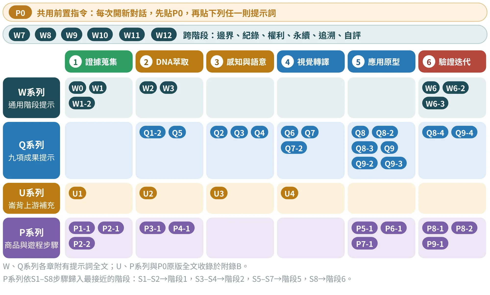
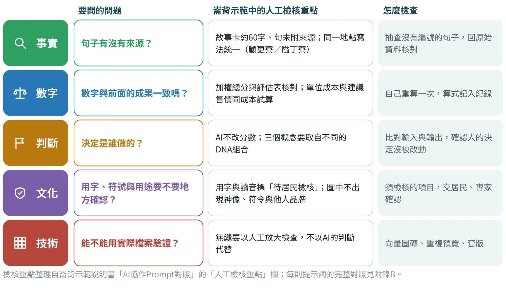
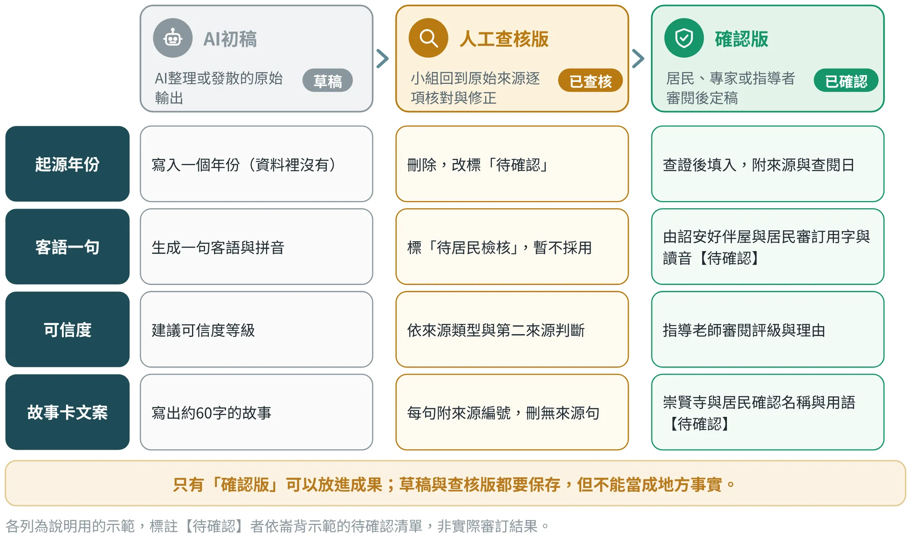

各階段的提示詞與紀錄
找到對的提示詞、改寫成可核對的版本，並把每次輸出變成確認過的成果
14.1提示詞地圖：四個系列、六個階段#
本書與配套說明書共用到四個系列的提示詞，外加每次對話開頭使用的共用前置指令P0（商品版與遊程版各一則，見第13章與附錄B；表B.1）。圖14.1把它們放在六個階段的位置上：做到哪一階段，就從那一欄找提示詞，不必從頭翻找。
| 系列 | 用途 | 數量 | 在哪裡看 |
|---|---|---|---|
| W系列 | 通用階段提示：專案計畫、證據、DNA、魅力主題、驗證，另有跨階段的邊界檢查、紀錄整理、權利檢核、永續轉譯初稿、追溯檢查、期末自評、永續宣稱審查、掛報與發表審查、移交與研究整理，以及書稿來源審查與數值核對 | 19則 | 第2–5章、第12–18章 |
| Q系列 | 九項成果的提示，含各成果延伸的檢查與改版提示 | 20則 | 第6–11章 |
| U系列 | 崙背示範補上的上游提示：證據矩陣、DNA與三角檢證、文化語彙與五感、色彩圖紋與權利，以及開案時的研究任務 | 5則 | 附錄B |
| P系列 | 商品與遊程兩份示範說明書的步驟提示（S1–S8）：商品版23則、遊程版21則 | 44則 | 附錄B |
W系列依張文山〈地方DNA設計轉譯〉階段表改寫；Q系列依成果1–9的工作面向與ChatGPT協作欄整理；U、P系列取自崙背與竹山示範說明書。整合版另補入U5、Q8-5至Q8-8與W13至W17。

圖14.1是依原有的提示詞繪製的，尚未標入整合時新增的U5、Q8-5至Q8-8，以及W13至W17；它們的所屬階段與全文位置，請見附錄B的表B.2。
14.2把含糊的需求改寫成可核對的提示詞#
學生最常見的提示詞是一句話：「幫我寫崙背的故事」。這樣問，AI只能用常識去補，補出來的東西沒有資料、沒有邊界，也無法核對。改寫的關鍵是把第13章的六個要素補齊：先給資料，再給規則，最後留下人的決定權（表14.2）。
| 改前（含糊） | 改後（資料、規則與把關） | 改了什麼 |
|---|---|---|
| 幫我寫崙背的故事 | 只依下列報導與訪談（每筆附編號）整理故事素材：【貼上】。每句附來源編號；沒有來源的不寫，需要補的資料另列清單。 | 補上資料、來源與缺口清單 |
| 幫我想竹山的圖紋 | 依已通過居民檢核的文化語彙：【貼上】，提出三種抽象化路徑；每種說明來源、抽象化做法與不可使用的元素；不得直接複製傳統圖像。 | 補上輸入條件與禁止事項 |
| 幫我評分 | 依我給的評分標準與分數：【貼上】，只做加總與覆核，不修改分數；指出與總表不符之處。 | 把「評分」改成「計算與檢查」，決定權留給小組 |
| 幫我估價 | 依我提供的報價（註明來源與日期）：【貼上】，計算單位成本與建議售價；缺少的項目標「待確認」，不要估價。 | 價格只來自提供的資料 |
| 這個設計在文化上可以嗎？ | 列出本設計用到的符號、用字與圖像，每項附來源；標出須由居民或專家檢核的項目；你不判定是否適切。 | 由「判定」改成「列出須檢核項」 |
改寫原則依P0共用前置指令與崙背、竹山示範說明書的提示詞設計：只依提供的資料、未知標待確認、判斷交給小組。
改寫時可以問自己三個問題：這則提示詞給了AI哪些資料？規定了哪些規則？哪些決定仍然留在人手上？三者缺一，就補上去。
14.3每則提示詞貼什麼、查什麼#
每一則提示詞都有「要貼的資料」與「人工要查的重點」兩個面向。崙背示範說明書把23則商品設計提示詞逐一列出這兩項，表14.3摘錄其中九則，示範如何把檢核重點事先寫下來：貼資料之前，就先想好輸出回來要查什麼。
| 代碼 | 要貼的資料 | 人工檢核重點 |
|---|---|---|
| P1-1 | 報導與訪談紀錄（附編號） | Persona有沒有虛構；任務書每一項說得出影響 |
| P2-2 | 實際調查的燈具、紀念品與農特產禮盒（品名、售價、日期、通路） | 只含調查資料，不得由AI補價格 |
| P3-2 | 15個POI的評分與給分理由 | AI不改分數；與總分核對 |
| P5-2 | 3張概念卡與評分 | 加權總分與評估表核對（A42、B35、C39） |
| P6-2 | 品名候選、故事素材與來源編號 | 故事卡約60字、句末有來源；不含起源年份 |
| P6-3 | 圖磚24×24 mm、3×3與5×5預覽、展開圖尺寸 | 無縫以人工放大檢查，不以AI判斷代替 |
| P7-1 | BOM與報價（註明來源與日期） | 單位成本與建議售價同成本試算；AI不得估價 |
| P8-2 | 量表分數、觀察紀錄與原話 | 平均與加權總分同評分表；少數意見保留 |
| P9-1 | 商品名稱、客群、DNA與POI、CMF重點、價格、測試結果 | 只用提供的內容；數字與全文一致 |
代碼為商品設計示範說明書的提示詞編號，全文見附錄B；數字為崙背示範的假設值，詳見第10章。
這些檢核重點可以歸納為五類：事實、數字、判斷、文化與技術（圖14.2）。每一次AI輸出回來，都用這五個問題過一遍：句子有沒有來源？數字和前面的成果一致嗎？決定是誰做的？用字、符號與用途要不要地方確認？能不能用實際檔案驗證？

一次縮小的完整示範：先確認輸入，再閱讀輸出
下面用一份刻意縮小的資料包，示範如何讓AI把「未知」保留下來（表14.4）。這不是訪談或調查，只是教學用的輸入。輸入越清楚，輸出越容易查核；提示詞再完整，也補不足不存在的地方證據。
| 輸入編號 | 內容與狀態 |
|---|---|
| E01 | 教材有竹杯彩繪的資源線索；尚未接觸業者 |
| E02 | 課堂假設：旅客希望把未完成的作品帶回家 |
| E03 | 已有一張概念圖；沒有實物、尺寸與材料證書 |
| 任務 | 整理需要確認的規格與下一輪訪談，不決定上市 |
請依E01至E03建立「主張／可支持的範圍／不能支持的內容／待確認／下一步」表。保留資料的狀態，不把假設改寫成旅客需求調查，不把概念圖改寫成實物驗證。只整理確認工作，不替業者承諾供應。
閱讀輸出時，用表14.5對照：左欄是合理的判讀，右欄是不該出現的說法。
| 應得到的判讀 | 不應出現的說法 |
|---|---|
| 可以研究竹杯彩繪的資源；需要詢問合作與產能 | 業者已同意供應100組 |
| 「帶回家續作」是需求假設，需要做使用者研究 | 多數旅客表示需要續作包 |
| 圖像可以討論外觀；尺寸與用途仍待測試 | 產品已通過飲食接觸安全與運輸測試 |
人工覆核時，先對照每一列能不能回到E01至E03，再看它有沒有提出適當的下一步。若AI主動加入新的地方故事，要移到「外部補充待查」欄，不混入原證據。採用時保留修正理由，並記入範本11與範本12。同樣的方法也可以用在崙背：只提供民俗背景與概念圖時，AI不能補出客語讀音、職人報價或電池續航；資料不足時，好的輸出就是一份準確的缺口清單。
14.4邊界檢查：請AI檢查AI#
AI的輸出常常混著「資料裡有的」與「它自己補的」，肉眼很難分辨。一個實用的做法，是開新對話，把原始資料與要檢查的輸出一起貼給AI，請它逐句標示哪些句子有資料支持、哪些沒有。這不能取代人工查核，但可以快速縮小要查的範圍。
以下有兩份內容。【資料】：【貼上原始資料，每筆附編號】；【待檢查文字】：【貼上AI先前的輸出】。請逐句檢查待檢查文字，列出三張清單：①有資料支持的句子，附資料編號；②沒有資料支持的句子；③可能是補寫的年份、地名、人物、數字、民俗說法或客語用字。不要修改原文，不要補充資料以外的內容；無法判斷的標「待確認」。
W7為本書補充的檢查提示詞，原則與P0相同：只依提供的資料、不補寫、未知標待確認。
以下是我這次與AI協作的過程：【貼上提示詞、AI輸出摘要、我做的修改與最後採用的版本】。請整理成協作紀錄表（範本11）的一列：輸入資料｜提示詞代碼與版本｜輸出摘要（80字內）｜人工修正（逐項）｜採用版本與理由。只整理我提供的內容，不補寫我沒有做過的修改。
用AI整理紀錄也要小心：它只能整理「已經發生」的事，不能替你補上沒有做過的查核。紀錄表上每一項「人工修正」，都應該是你真的做過的。
請逐段檢查以下的成果說明或書稿：【貼上】。標示其中的「地方事實」「歷史描述」「研究推論」「設計假設」與「模擬數據」，並為每一項對應來源。找出把可能產出寫成已完成、把教材示例寫成實測、或把合作候選寫成已同意的地方；提出保留原意的精確改寫，以及需要作者審訂的清單。不要自行補造引用。
根據以下的原始表格：【貼上】，逐一重算權重總和、加權分數、成本、分潤、可分配餘額比例、時間與百分比。列出原值、算式、重算值、差異與四捨五入的方式，並指出資料口徑與未納入的項目。只核對我提供的數字，不猜測缺值，也不把模擬數據稱為實測。
W16、W17為整合時新增的提示詞，用於交稿前的審查，原則與P0相同。AI只能指出差異與疑點；改不改、怎麼改，由作者與小組決定。
14.5版本管理：從草稿到確認版#
AI輸出不是成果，而是原料。每一份重要輸出都要經過三個版本：AI初稿、人工查核版、確認版。只有確認版可以放進成果，前兩個版本要保存，但不能被當成地方事實（圖14.3）。

版本管理有三條規則：
- 每一則輸出都標狀態。 在檔名或欄位上寫明「草稿」「已查核」或「已確認」，避免把草稿誤放進成果。
- 確認者要看得出來是誰。 查核版由小組完成；涉及用字、民俗與名稱的內容，由居民、專家或單位確認，並記下確認者與日期。
- 未確認的內容保持「待確認」。 即使時間不夠，也不要把待確認的內容寫成已確認；把它列進待確認清單，留待下一輪處理。
14.6常見的失敗模式與修正#
熟悉AI的人也常犯錯。表14.6列出六種最常見的失敗模式、怎麼發現它，以及發現之後怎麼修正。把它貼在工作區，每一次AI輸出回來時對照一遍。
| 失敗模式 | 怎麼發現 | 怎麼修正 |
|---|---|---|
| 補寫事實：年份、人物、地名、民俗說法 | 每句要求附來源編號，抽查沒有編號的句子；用W7邊界檢查 | 刪除或改標「待確認」；開新對話重貼P0 |
| 改分數、算錯數字 | 與人工加總核對；比對輸入與輸出的分數 | 只讓AI計算、不讓它評分；自己重算並留下算式 |
| 創造客語用字或民俗說法 | 用字、讀音與說法交居民比對 | 標「待居民檢核」，不採用；改由居民與專家提供 |
| 估價、估營業時間與交通 | 數字沒有來源與日期 | 標「待確認」；向店家、廠商或單位詢問後再填 |
| 模式化的意象（抹平差異） | 把地名換成別處，這段文字還成立嗎？ | 要求只用本地證據中的元素；補田野資料；請居民指出「只有我們才有」的細節 |
| 影像仿冒或複製傳統圖像 | 對照來源圖像、品牌與宗教符號 | 重畫；影像只作情境模擬，最終圖紋由設計者以向量完成 |
14.7影像生成AI的使用邊界#
生成式影像AI可以快速產出情境模擬圖與視覺發想，但在地方設計中要守住三條線：
- 只作溝通，不作成果。 情境模擬圖用於向居民、合作單位與團隊說明想像中的使用情境；最終的色彩、圖紋與包裝，仍由設計者以向量檔完成。
- 不仿冒他人品牌，不直接複製傳統圖像、宗教或族群符號。 提示詞中要明寫禁止事項，輸出圖像也要人工檢查是否出現神像、符令或他人商標。
- 四方連續樣式圖不能靠AI判定。 AI圖像「看起來像無縫」不等於無縫；一定要有向量圖磚、尺寸、座標與3×3、5×5預覽，由人工檢核。
AI生成的圖像要在紀錄中註明工具、用途與日期，並與設計師自己繪製的檔案分開存放；如果要放進成果，須標示「AI生成之情境模擬」。
請AI生成商品概念模擬圖時，提示詞要把已確認的內容寫清楚：已選的概念、來源摘要、設計語法、CMF與內容物清單。同時要明寫禁止事項：不增加未指定的配件、品牌標誌、文化圖像或不存在的認證；人物與場景只是模擬，不暗示真實業者背書；文字若無法精確呈現，就保留版面空間，供後續排版；不要生成可使用的QR碼，改用「連結預留」標記。圖外的說明，則列出尚未確認的尺寸、材質、結構與性能；最終的圖只作概念溝通。
圖像生成之後，還有三步不能省略：先對照清單，移除多出的配件與不合理的結構；再檢查地方來源、圖中文字與文化用途；最後把採用的外觀轉成實際的尺寸、向量圖紋、CMF與製造圖。這三步不能被一句「請生成專業設計」取代。包裝展開圖、無縫圖磚、服務藍圖與精確的數據圖表，應使用可以控制座標與文字的繪圖方式；生成的影像可以提供氣氛與構想，精確的資訊則要由設計者重新建立。
本書第10章與附錄G，收錄了竹山與崙背兩個示範的AI概念模擬圖版。每一張都標明「AI生成模擬圖；非實物、非實測」，並附上「如何讀圖」與「從圖面回到實作」，示範怎樣把一張精緻的模擬圖，讀成一份可以檢查的設計提案。